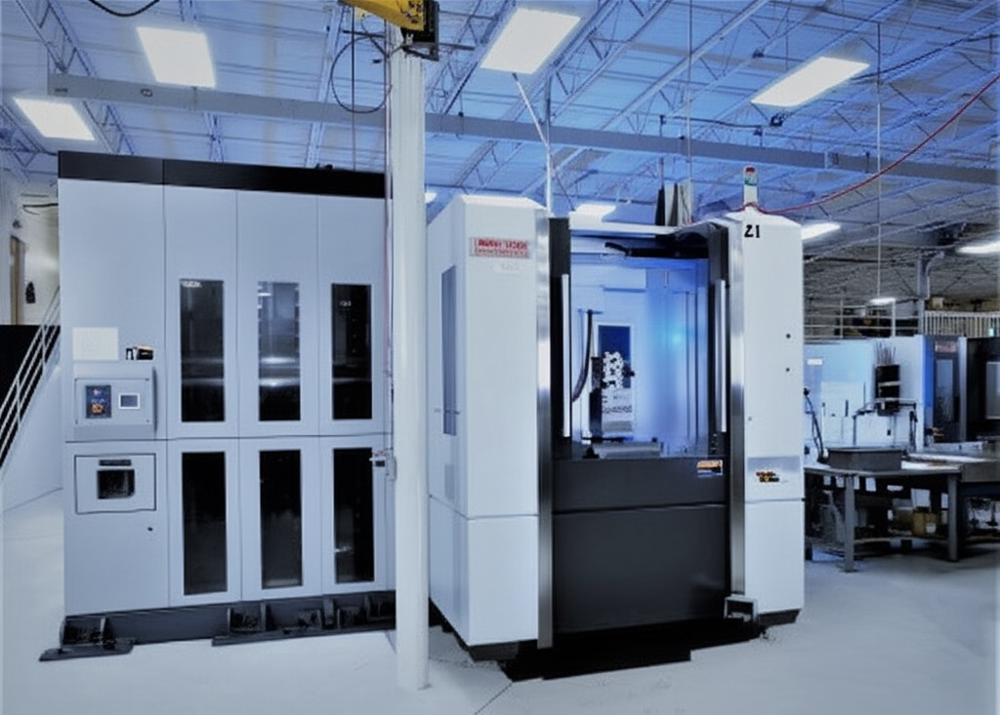
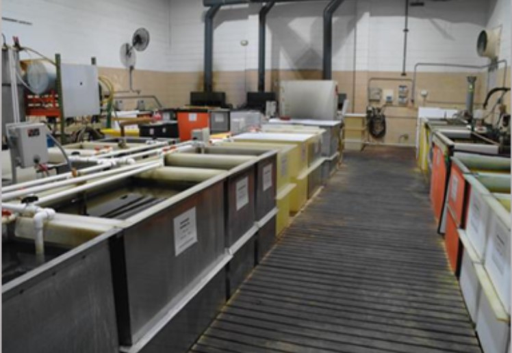
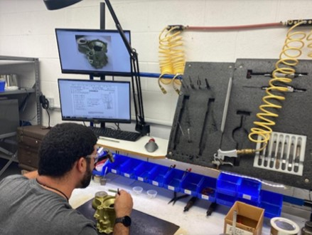
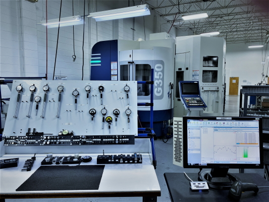

Norris Precision's Lean Manufacturing initiatives ingrain the discipline, daily practices, and tools needed to establish and maintain a persistent, intensive focus on processes that are measured to expected results. They identify value added activities in the value stream to eliminate waste and improve manufacturing and business processes. Norris Precision's Lean culture utilizes the disciplines of Leadership Standard Work, Visual Controls, and Accountability processes to drive Kaizen projects that eliminate waste while increasing capacity and reducing lead time.
Manufacturing Excellence
Innovative solutions for aerospace, military, and medical industries with precision at our core
40+
Years Experience
0.0001"
Precision
100%
Quality
Precision Machining
At Norris Precision, we specialize in high-precision CNC machining for aerospace, military, and medical applications. Our state-of-the-art equipment and expert machinists deliver components with exceptional accuracy and quality.
Our facility houses multiple 5-axis machining centers, allowing us to manufacture complex geometries with extreme precision. Each machining cell is optimized for efficiency and quality, ensuring consistent results across production runs.
With decades of experience in precision manufacturing, we've developed proprietary processes that enable us to achieve the tightest tolerance consistently. Our technical expertise combines with cutting-edge equipment to deliver components that meet the most demanding specifications.

5-Axis Machining
Complex geometries with superior surface finishes for demanding aerospace applications.
3-4 Axis Machining
Accurate multi-surface machining for aerospace parts requiring consistent, tolerances.
High-Speed Machining
Efficient production with reduced lead times while maintaining exceptional quality.
Automated Processes
Consistent quality with robotic handling and automated inspection systems.
Metal Finishing
Norris Precision Mfg. offers the highest quality Nadcap certified chemical processing. We offer chromic and sulfuric anodize, chem-film, and passivation processed to a wide variety of government, military, and customer specifications. Having this capability in-house greatly reduces manufacturing lead-time while improving quality by having complete process control to maintain dimensional integrity.

Anodizing
Chromic and sulfuric anodizing processes that provide corrosion resistance and enhanced surface properties for aerospace and military applications.
Chemical Conversion Coating
Chem-film treatments that create protective conversion coatings, ensuring optimal adhesion for paint systems and corrosion protection.
Passivation
Precision passivation services that remove free iron and enhance the natural corrosion resistance of stainless steel components.
New Metal Finishing Facility
Expanding our capabilities with a dedicated finishing center for enhanced capacity and faster turnaround times.
Learn More About Our Capabilities

Assembly & Testing
In addition to Norris Precision's machining capabilities, we offer a full range of value-added assembly options to provide our customers with complete, ready-to-install components and subsystems, saving time and ensuring quality.
Precision Assembly
Complete component and subsystem assembly with quality control at every step.
Hydrostatic pressure testing
Verifies structural integrity and leak resistance using controlled high-pressure water testing.
Documentation
Detailed documentation and traceability for all assembly and testing processes.
Lean Manufacturing

Continuous Improvement
Ongoing optimization of processes to eliminate waste and improve efficiency.
Value Stream Mapping
Identifying and eliminating non-value-added activities throughout production.
Just-In-Time Production
Minimizing inventory while maintaining production flow and meeting delivery requirements.
Digital Integration
Smart manufacturing technologies that improve visibility and decision making
Want to see more of our capabilities? Explore how we bring precision and quality to every project.
View More Capabilities